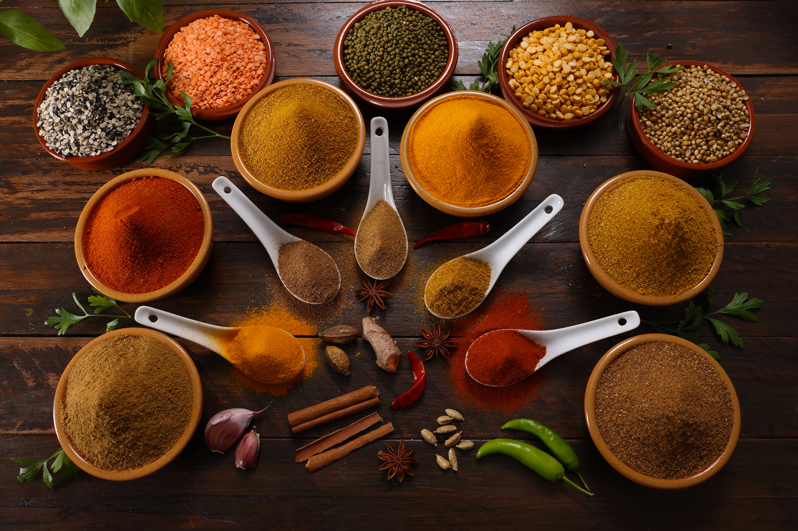

Flor de Liz
¡Bienvenidos al Catálogo de Flor De Liz! Somos una empresa familiar comprometida con la calidad, dedicada a la producción y comercialización de frutos secos, frutas deshidratadas, semillas, condimentos, conservas, cereales, aceite y más. En esta página encontrarás una amplia variedad de productos seleccionados con esmero para brindarte sabor, frescura y nutrición en cada presentación. Navegá por nuestras categorías, usá el buscador para encontrar lo que necesitás y descubrí todo lo que tenemos para ofrecerte, tanto para consumo personal como para venta mayorista. ¡Gracias por confiar en Rodena!